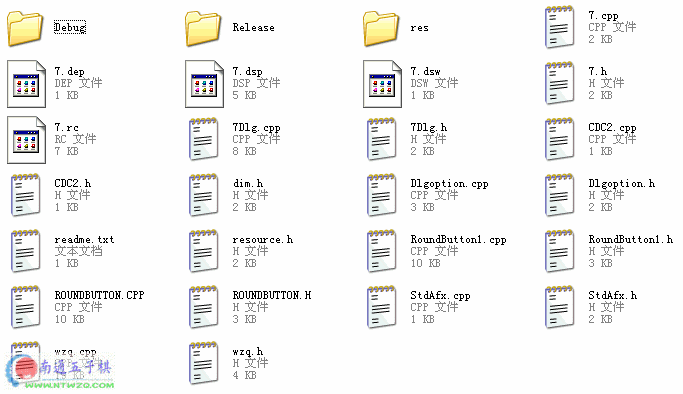
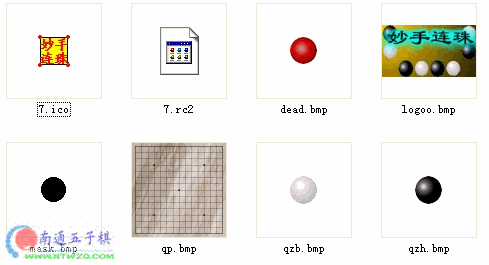

妙手连珠源程序
首页
五子棋软件
#1 妙手连珠源程序 作者：有志青年 发表时间：2006-4-2 16:08:24


 fiver.rar
fiver.rar
#2 Re:妙手连珠源程序 作者：kaster 发表时间：2006-4-2 19:10:04
C++？
#3 Re:妙手连珠源程序 作者：无声无息 发表时间：2006-4-5 19:41:54
怎么使用？
#4 Re:妙手连珠源程序 作者：寂静的海岛 发表时间：2006-4-13 2:20:09
这都有，强啊
#5 Re:妙手连珠源程序 作者：风起云淡 发表时间：2006-4-17 0:26:50
谢了
#6 Re:妙手连珠源程序 作者：海风月影 发表时间：2007-2-1 22:11:38
不错，好东西
#7 Re:妙手连珠源程序 作者：小小九 发表时间：2009-5-23 19:54:24
 ！
！
#8 Re:Re:妙手连珠源程序 作者：小小九 发表时间：2009-5-23 19:55:00
引用：
原文由 小小九 发表于 2009-5-23 19:54:24 :
！
#9 Re:妙手连珠源程序 作者：战刀 发表时间：2009-9-29 21:48:55
这个怎么用啊？
#10 Re:妙手连珠源程序 作者：叶昀 发表时间：2009-10-4 22:51:33
不会用，楼猪说明一下
#11 Re:妙手连珠源程序 作者：521abc 发表时间：2011-7-25 22:52:25
这个真不会用
#12 Re:妙手连珠源程序 作者：佛心诚 发表时间：2011-9-15 23:50:09
看不懂啊，电脑知识不够
#13 Re:妙手连珠源程序 作者：陶涛业余 发表时间：2011-10-25 16:39:18
收藏了，拿回去研究五子棋计算机实现。。。
#14 Re:妙手连珠源程序 作者：怪 发表时间：2011-10-25 16:45:13
原来早就开源了阿
#15 Re:妙手连珠源程序 作者：小丸.net 发表时间：2011-10-25 16:56:53
挖，你们继续挖。。。。把哥惹火了让砖头飞。。。。
#16 Re:妙手连珠源程序 作者：血小贱 发表时间：2013-9-30 18:57:27
学习